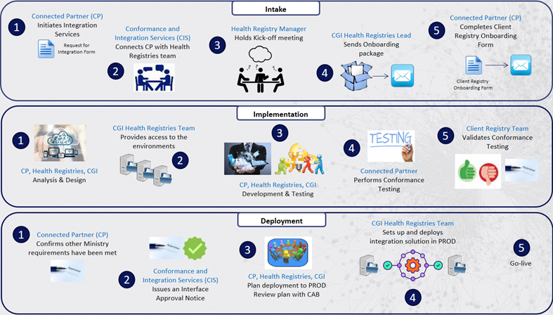
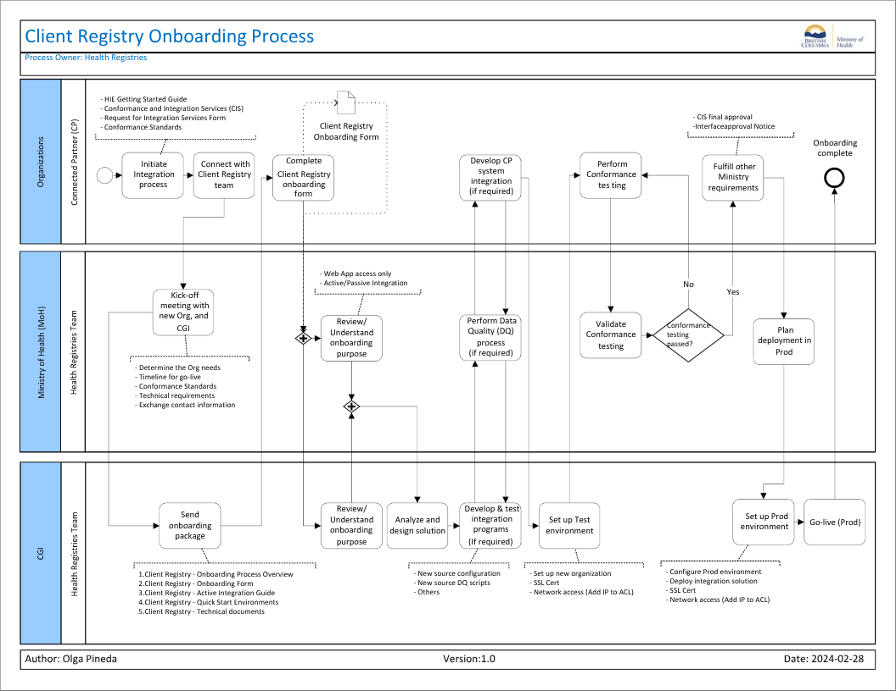

BC Client Registry FHIR Implementation Guide - Local Development build (v1.0.0) built by the FHIR (HL7® FHIR® Standard) Build Tools. See the Directory of published versions
Connected Partners
Provincial Client Registry Onboarding Process Summary
The Provincial Client Registry Onboardings is the process to onboard Organizations interested in integrating their applications with the Provincial Client Registry (PCR) system. The purpose of this process is to guide the organizations on the necessary activities, procedures, and technical requirements to become a Provincial Client Registry's Connected Partner. This process starts with the Ministry Conformance and Integration Services (CIS) team, who connects the organization with the Ministry of Health (HLTH) Registries team. The process is organized by the following phases.
- Intake: The goal of the Intake phase is to familiarize the new Organization on the required policies and procedures to integrate with Provincial Client Registry as well as for MoH and CGI Health Registry. Teams to gather the requirements of the new organization.
- Implementation: The implementation phase is all about understanding the Connected Partner business goals and requirements, designing and developing the integrated solution that meets their goals and ensuring the Conformance testing is successfully done.
- Deployment: The deployment phase includes all the necessary steps to fulfill other Ministry integration requirements such as Audit, Security, etc.; obtaining the interface approval from CIS team and deploying the solution in Production environment.

Note: Connected partner will need to complete privacy & security volume 2 gap analysis. The questionnaire will be provided by CIS after the kick-off meeting. The gap analysis will occur in parallel to the process above.
Provincial Client Registry Onboarding Process
Process Overview
- Process Name: Provincial Client Registry Onboarding Process
- Process Purpose: Onboard Organizations interested in becoming Connected Partners and integrating their applications with the Provincial Client Registry (PCR) application.
- Process Objectives:
- Identify Connected Partner integration needs.
- Meet MoH Conformance standards and other Ministry requirements.
- Integrate Connected Partner systems with Provincial Client Registry system.
- Process Scope: Provincial Client Registry application (HCIM)
- Primary Business Process Areas:
- MoH - Health Registries
- CGI - Health Registries
- MoH - Conformance and Integration Services (CIS)
- Key Activities:
- Kick-off meeting
- Analysis and Design
- Develop Integration (if required)
- Set-up Test environment
- Perform DQ process (if required)
- Pass Conformance testing
- Fulfill other Ministry's requirements
- Plan deployment in Prod
- Go-live
- Start Events:
- Connected Partner (CP) submits Integration Request
- Conformance and Integration services teams connects CP with MoH Health Registries team
- Inputs:
- Request for Integration Form
- Provincial Client Registry Onboarding Form
- Outputs: Connected Partner system integrated with MoH Health Registry
- End Events: Onboarding complete
- Process Participants:
- Connected Partner (CP)
- MoH Health Registries Manager
- MoH Health Registries Admin
- MoH Health Registries DQ team
- CGI Health Registries Business Support Lead
- CGI Health Registries Technical Team
- CGI Health Registries Ops Team
- Primary Policies and Procedures:
- Conformance and Integration Services
- Conformance Standards
- HL7 and FHIR standards
- Information Systems and Tools: HCIM
- Supporting Documentation:
Process Flow
The following diagram shows the process flow for the Provincial Client Registry Onboarding process.

Process Activities
Start Event: Initiate the Integration process
Initiate Integration process: To initiate the Integration process for Oranizations developing interfaces to the ministry's Health Information Exchange (HIE) systems, the Organization should follow steps outlined through the HIE website:
- Contact the Conformance and Integration Services team.
- Review the Getting Started Guide
- Review the Conformance Standards for Provincial Client Registry
- Fill out the mandatory Request for Integrated Services form and provide to Conformance and Integration Services link
Note: MoH may have other requirements for a new Organization that are not detailed here.
Connect with Provincial Client Registry team: The Conformance and Integration Services team is responsible for the initial Intake process and then introduces the Connected Partner to the MoH Health Registries Manager to start the onboarding process for the Provincial Client Registry.
Kick-off meeting with new Org. and CGI: The MoH Health Registries Manager arranges a Kick-off meeting with the new organization, and CGI Health Registries Team to discuss the following topics:
- Determine the needs of the Organization.
- Identify the timeline for go-live.
- Explain the Conformance Standards and the Conformance testing.
- Provide an overview of the Technical requirements.
- Exchange contact information and set up email distribution list.
Send onboarding package: The CGI Health Registries Business Support Lead sends the onboarding package to the Connected Partner by email. The Onboarding package includes:
- 1.Provincial Client Registry - Onboarding Process Overview
- 2.Provincial Client Registry - Onboarding Form
- 3.Provincial Client Registry - Active Integration Guide
- 4.Provincial Client Registry - Quick Start Environments
- 5.Provincial Client Registry - Technical documents
Complete Provincial Client Registry onboarding form: The Connected Partner completes the Provincial Client Registry Onboarding form and sends it back to MoH Health Registries Manager and CGI Health Registries Business Support Lead for their review.
Review/Understand onboarding purpose: The MoH Health Registries Team and the CGI Health Registries Team review the onboarding form and identify the type of integration requested by the Connected Partner. For example:
- Web application access only
- Active/Passive Integration
Analyze and design solution: The CGI Health Registries Team in collaboration with the MoH Health Registries Team analyzes and designs the solution to meet the requirements of the Connected Partner integration. They also identify if any development is required for the Connected Partner's applications to integrate with Provincial Client Registry system.
Develop and test integration programs (if required): The CGI Health Registries Team plan and initiates the efforts to set-up the integration, development and test of the integration programs (if required). If the new organization will be updating records in Provincial Client Registry system then they will need a 'source' within MDM which involves development of related algorithms.
Perform Data Quality (DQ) process (if required): The MoH Health Registries Data Quality (DQ) Team starts the Data Quality process to provide further details on the Data Quality requirements for Active Integrations with the Provincial Client Registry system (if required).
Develop CP system integration (if applicable): The Connected Partner identifies the integration and development required from their systems.
- If the Connected Partner is only requesting access to the HCIM Web Application, they do not require any development on their systems.
- If the Connected Partner is requesting active integration, they need to develop the integration in their system, and related integration may need to be developed in Provincial Client Registry system.
Set up Test environment: The CGI Health Registries Team sets up the Test environment which includes the following:
- Set up the new org in the test environment
- SSL Certificate
- Network access (Add IP to ACL)
Perform Conformance testing: When the development and testing is complete, the Connected Partner performs the Conformance Testing with the support and guidance from MoH Health Registries Team.
Validate Conformance testing: The MoH Health Registries Team validate the results of the Conformance testing.
Decision: Conformance testing passed?: The MoH Health Registries Team decides if the Conformance Testing has been successfully passed.
- Yes: Go to next activity
- No: Go back to Performance Conformance Testing
Fulfill other Ministry requirements: The Connected Partner confirms if the integration requirements of all Ministry areas have been met for integrating with Provincial Client Registry.
Note: This includes privacy and security gap analysis (volume 2).
If they do, CIS issues an Interface Approval Notice, providing the final approval to connect to production.
Plan deployment in Prod: The MoH Health Registries and CGI Health Registries Team plan the details of the deployment of the new Connected Partner integration with Provincial Client Registry system. Then they review the deployment plan with CAB.
Set up Prod environment: The CGI Health Registries Team sets up the Prod environment and deploys the integration solution which includes the following:
- Configure Prod environment
- Deploy integration solution
- SSL Certificate
- Network access (Add IP to ACL)
Go-live (Prod): The CGI Health Registries Team activates the integration between the Connected Partner system and Provincial Client Registry system.
End Event: Onboarding complete
Provincial Client Registry Onboarding Package
The following is the list of Onboarding documents that are part of the Provincial Client Registry Onboarding process.
- Provincial Client Registry - Onboarding Overview
- Document purpose: Provide a general overview of the onboarding process and the steps involved.
- Document name: 3-Provincial Client Registry Onboarding Overview
- Provincial Client Registry - Onboarding Form
- Document purpose: Information required by the operations team to set up and configure the onboarding organization according to their requirements.
- Document name: SOURCE_NAME Information - Return to AMS Support
- Provincial Client Registry - Active Integration Guide
- Document(s) purpose: Technical guides for specific aspects of the application.
- Document(s) name:
- Active Integration Guide - Distribution Lists v1.0
- Active Integration Guide - HCIM Warning and Error Messages v1.0
- Active Integration Guide - MoH SharePoint Site Instructions
- Active Integration Guide - Onboarding Steps
- Provincial Client Registry - Quick Start Environments
- Document(s) purpose: Endpoint URLs for the various services provided by the application. One document for each environment.
- Document(s) name:
- Quick Start - Development Environment (HD4)
- Quick Start - EMR Conformance Environment (HT2)
- Quick Start - Health Production Environment (HP1)
- Quick Start - Health Staging Environment (HS1)
- BCHCIM Quick Overview HIAT1
- BCHCIM Quick Overview HIAT2
- Provincial Client Registry - Technical documents
- Document purpose: Technical documentation for building a connecting system. Includes messaging specs and examples.
- Document name: Technical specs will be provided during onboarding process.
Glossary
The following terms, acronyms, and abbreviations are used throughout this document.
- CAB: Change Advisory Board
- CIS: Conformance and Integration Services
- CP: Connected Partner
- PCR: Provincial Client Registry
- DQ: Data Quality
- EMPI: Enterprise Master Patient Index (IBM) - Master Data Management tool (Golden record)
- HA: Health Authorities
- HCIM: HealthCare Client Identity Management system
- HIE: Health Information Exchange
- PHN: Personal Health Number
- PLR: Provider and Location Registry
- MDM: Master Data Management
- MoH: Ministry of Health
- SFTP: Secure File Transfer Protocol
Policies and Procedures
Request for Integration Services Form link
Provincial Client Registry Onboarding form
Becoming a Connected Partner
- To book a Vendor Discovery Session (Kick-off meeting), please email CIS Support (HLTH.CISSupport@gov.bc.ca) and cc RegConnection
- For any questions related to the Provincial Client Registry, please email RegConnections (hlth.registriesconnections@gov.bc.ca)